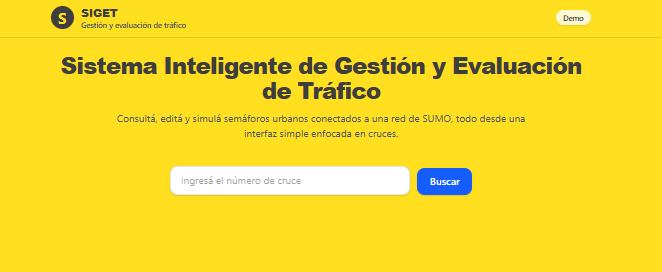
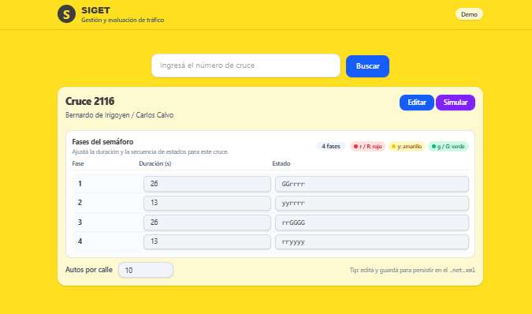
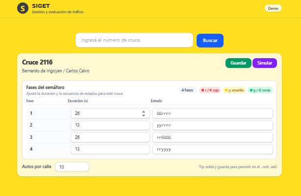
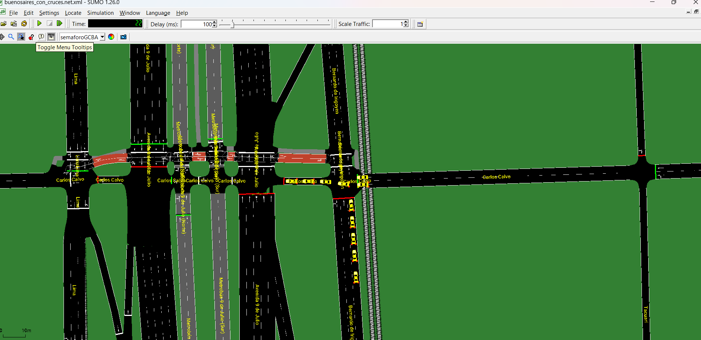
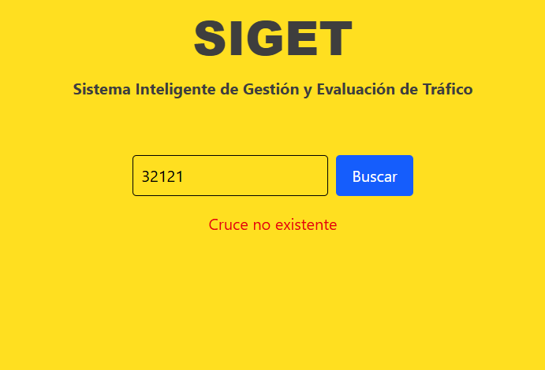

Sistema Inteligente de Gestión y Evaluación de Tráfico
React + FastAPI + SUMO
Aplicación web para consultar, editar y simular semáforos (TLS) de una red de tránsito modelada en SUMO.
Pensada para redes urbanas como Buenos Aires: gestionar programas de semáforos y evaluar el tráfico mediante simulaciones.

Búsqueda por número de cruce

Calles, fases del semáforo y duraciones

Modificar duración y estados, guardar en el .net.xml

Vehículos circulando por el cruce seleccionado

Mensaje claro cuando el cruce no existe
| Método | Ruta | Descripción |
|---|---|---|
| GET | /tls/cruce/{numero} | Obtener datos del cruce |
| GET | /tls/{tl_id} | Obtener programa TLS |
| POST | /tls/{tl_id}/program | Actualizar programa |
| POST | /tls/simulation/start/{numero} | Iniciar simulación |
siget/
├── siget-backend/ → API FastAPI
├── siget-frontend/ → React + Vite
├── sumo-data/ → Red .net.xml, rutas, backups
└── presentacion/ → Esta presentaciónSistema Inteligente de Gestión y Evaluación de Tráfico
Gracias